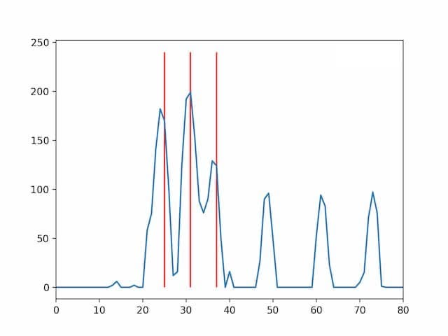

Help
To start recognizing chords, allow access to the microphone. Chords has the following
limitations:
- works best in a quiet space
- works best with instruments that produces clear harmonics with few overtones
- is limited to the range between F♯3 and E6
About
Chords recognizes musical notes present in played audio. It runs on most modern desktop
and mobile browsers.
Algorithm
To recognize notes, the following process is used:
- The audio input is split into 4096 sample wide chunks.
-
Every 1/10 second, this buffer is transformed to a power spectrum
in frequency space using a
fast Fourier Transform. Frequencies that do not correspond to musical notes are discarded.
-
A new analysis series is started whenever the total power in the spectrum more than doubles
between consecutive spectra.
-
Whenever an analysis series is started, a
Bayes Filter is used consecutively to determine which of the notes in the spectrum
are being played and which are overtones or noise. (See
here
for a Jupyter Notebook with examples.)

Example Spectrum showing a C4 major. The cord is highlighted in red.
Credits
Chords is made by Tilman Roeder for the
SWE Project
Competition. Icons based on the
In The Studio icon-set.